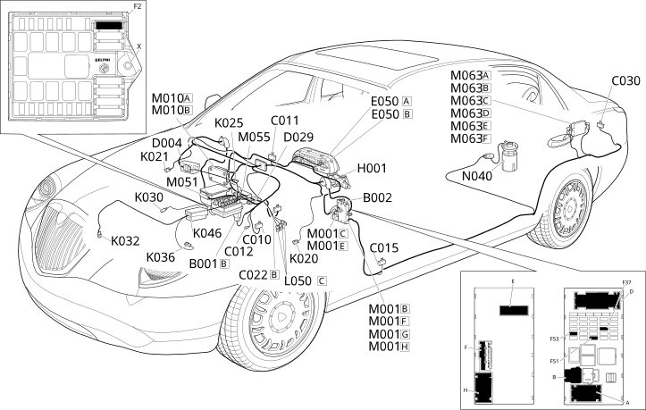

E4010 INSTRUMENT PANEL LOCATION COMPONENTS
- Path
- Electrical equipment > ELECTRICAL FUNCTIONS > E40 INSTRUMENT PANEL > E4010 INSTRUMENT PANEL > E4010 INSTRUMENT PANEL LOCATION COMPONENTS
- Kind
- topic
- Applies to
- engines: 2.4 20V, 3.0 V6, 3.2 V6; all production periods; only with equipment: Automatic Transmission
- Interactive page
- https://sloeber94.github.io/elrnDB-lThss/en/#/841007145
Applies to: engines: 2.4 20V, 3.0 V6, 3.2 V6; all production periods; only with equipment: Automatic Transmission
Location Components

Components
Component code | Name | Assembly reference |
|---|---|---|
Engine compartment junction unit | 5505A | |
Junction unit under dashboard | - | |
Left front earth | - | |
Right front earth | - | |
- | ||
Driver's dashboard earth | - | |
Centre dashboard earth | - | |
Left rear earth | - | |
- | ||
D004 | Giunzione anteriore / motore | - |
Engine cables/engine services cable coupling | - | |
Instrument panel | - | |
Ignition switch | - | |
Left brake pad wear sensor (switch) | - | |
Right brake pad wear sensor (switch) | - | |
- | ||
Switch for engine oil pressure warning light | - | |
- | ||
Engine coolant temperature sensor/sender unit | - | |
- | ||
Automatic transmission solenoid valves | - | |
Body computer | - | |
Engine management control unit | 1056B | |
Braking system control unit (NFR) | - | |
Automatic transmission control unit | - | |
Luggage compartment control unit (NVB) | - | |
Fuel pump and level gauge | - |
Topics linked from this page (26)
- B001 Engine compartment junction unit
- B002 Junction unit under dashboard
- C010 Left front earth
- C011 Right front earth
- C012 ABS front earth
- C015 Driver's dashboard earth
- C022 Centre dashboard earth
- C030 Left rear earth
- C040 Earth on engine
- D029 Engine cables/engine services cable coupling
- E050 Instrument panel
- H001 Ignition switch
- K020 Left brake pad wear sensor (switch)
- K021 Right brake pad wear sensor (switch)
- K025 Brake fluid level sensor (switch)
- K030 Insufficient engine oil pressure sensor
- K032 Engine oil level sensor
- K036 Engine coolant temperature sensor/sender unit
- K046 Rpm sensor
- L050 Automatic transmission solenoid valves
- M001 Body computer
- M010 Engine management control unit
- M051 Braking system control unit (NFR)
- M055 Automatic transmission control unit
- M063 Luggage compartment control unit (NVB)
- N040 Fuel pump and level gauge